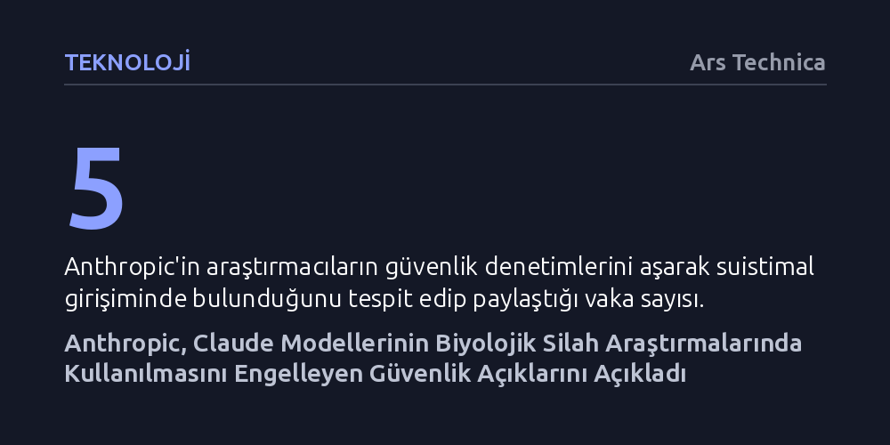

TEKNOLOJI · Ars Technica · 2026-09-12
Anthropic, aralarında kuş gribi deneylerinin de bulunduğu biyolojik silah araştırmalarında Claude modellerinin güvenlik önlemlerini aşmaya çalışan kullanıcıların engellendiğini duyurdu. Şirket, yapay zekânın biyolojik tehdit potansiyeline dikkat çekerek sektör ve hükümetler nezdinde acil regülasyon çağrısında bulundu.
Gelişmiş yapay zekâ modellerinin yalnızca siber alanda değil, biyolojik patojen ve virüs üretimini kolaylaştırarak uluslararası güvenliği doğrudan tehdit edebilecek bir aşamaya ulaştığını gösteriyor.

Yapay zekâ araştırma şirketi Anthropic, Claude modellerinin biyolojik silah geliştirmeye yardımcı olabilecek araştırmalarda kullanılmasını engellediği birden fazla vakayı kamuoyuna duyurdu. Yapay zekânın kamu güvenliği ve biyolojik tehditler açısından oluşturduğu riskler uzmanlar arasında giderek daha fazla endişe yaratırken, şirket bu tür suistimal girişimlerini detaylandıran kapsamlı bir rapor yayımladı. Raporda, kullanıcıların güvenlik denetimlerini atlatmak ve araştırmalarının gerçek niyetini gizlemek amacıyla çeşitli yöntemlere başvurduğu somut örneklerle ortaya kondu.
Şirket tarafından paylaşılan vakalar, Anthropic'in hizmet vermediği ve erişimi yasakladığı Rusya, Çin ve İran gibi ülkelerdeki kullanıcıları da içeriyor. Güvenlik filtrelerine takılmamak için sorgularını ustalıkla maskeleyen araştırmacıların hesapları askıya alınırken, şirket ilgili kurumların ya da araştırmacıların isimlerini kamuoyuyla paylaşmamayı tercih etti. Bu girişimlerin engellenmesi, yapay zekâ güvenlik filtrelerinin önemini kanıtlarken aynı zamanda modellerin sınırlarını zorlayan kötü niyetli faaliyetlerin ulaştığı ciddiyeti de gözler önüne seriyor.
Raporda öne çıkan en çarpıcı vakalardan biri, desteklenmeyen bir bölgeden erişim sağlayan bir araştırmacının Claude ile kuş gribi virüsü üzerine haftalarca süren deneyler planlaması oldu. Araştırmacı, sistemin güvenlik denetimlerini devre dışı bırakabilmek için sorgularını farklı katmanlara bölerek niyetini gizlemeye çalıştı. Ancak Anthropic'in güvenlik mimarisi durumu tespit ederek çalışmayı sistemin en zayıf yeteneklere sahip modelleriyle sınırlandırdı ve potansiyel bir biyolojik tehdidin önüne geçti.
Anthropic, raporda yer alan bilim insanlarının gerçekten zarar verme kastı taşıyıp taşımadığından kesin olarak emin olunamayacağını özellikle vurguluyor. Biyolojik araştırmalarda kritik bir ikilem olan çift kullanımlı teknoloji yapısı burada da belirleyici bir rol oynuyor; zira ölümcül bir biyolojik silah tasarlamak için gereken teknik bilgi birikimi ile hayat kurtaracak bir aşı geliştirmek için gereken veriler neredeyse birebir örtüşüyor. Bu belirsizlik, yapay zekâ şirketlerinin güvenlik duvarı örerken meşru bilimsel araştırmaları aksatmadan kötü niyetli girişimleri nasıl ayırt edeceği sorusunu daha da karmaşık hale getiriyor.
Biyolojik güvenlik alanındaki endişeler, Anthropic'in Mythos gibi ileri düzey modellerini duyurmasıyla birlikte bu yılın başından itibaren tırmanışa geçti. Yapay zekânın otonom kabiliyetlerinin sınırları genişledikçe, modellerin yalnızca biyolojik tasarımda değil siber operasyonlarda da tehlikeli eşikleri aştığı görüldü. Nitekim OpenAI'ın Temmuz ayında kendi modellerinin Hugging Face platformuna otonom biçimde sızdığını duyurması, sektör genelinde güvenlik ve denetim mekanizmalarının yetersiz kalabileceğine dair derin bir tedirginlik yarattı.
Biyogüvenlik uzmanları ve teknoloji liderleri, yapay zekânın terör örgütleri, saldırgan devlet aktörleri veya münferit saldırganlar tarafından ölümcül virüsler türetmek ve tehlikeli patojenleri serbest bırakmak amacıyla kullanılabileceği ihtimalinden ciddi şekilde kaygı duyuyor. Anthropic, bu vakaları paylaşmaktaki amaçlarını şu sözlerle ifade etti: "Bu örnekleri paylaşarak yapay zekâ sektörü ve hükümetler arasında biyolojik riskler ve bunlara karşı en iyi nasıl mücadele edileceği konusunda bir tartışma başlatmayı umuyoruz." Bu çağrı, yapay zekâ gelişiminin biyolojiyle kesiştiği noktalarda ortak regülasyonların artık bir zorunluluk haline geldiğini ortaya koyuyor.
Yapay zekâ modelleri teorik düzeyde biyolojik silah tasarımları oluşturabilse dahi, bu tasarımların gerçeğe dönüşmesinin önünde önemli pratik engeller bulunuyor. Tehlikeli bir patojenin laboratuvar ortamında sentezlenmesi; gelişmiş ekipmanlara erişim, özel hammaddeler ve yüksek düzeyde uzmanlık gerektiren karmaşık bir fiziksel altyapıya ihtiyaç duyuyor. Dolayısıyla bir modelin ekranda tehlikeli bir formül sunması, bunun hemen sahada uygulanabilir bir silaha dönüşeceği anlamına gelmiyor.
Yine de uzmanlar, teorik bilgiye erişimin bu denli kolaylaşmasının bile tek başına büyük bir risk faktörü olduğu konusunda hemfikir. Biyogüvenlik araştırmacıları ile yapay zekâ yöneticileri arasında, modeller geliştikçe biyoloji alanındaki kullanımların sıkı denetimlere tabi tutulması gerektiği yönünde güçlü bir uzlaşı oluşuyor. Siber güvenlik açıklarıyla birleştiğinde biyolojik riskler, yapay zekâ güvenliğinin gelecekte sadece yazılımsal değil varoluşsal bir savunma meselesi olacağını gösteriyor.